| 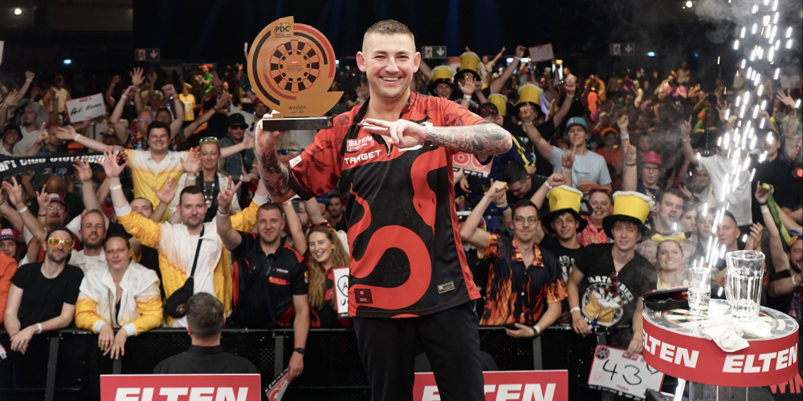 |
|---|
| European Tour 8 v Leverkusenu |
 PDC.tv BUY NOW
PDC.tv BUY NOW
|
|---|
As of: June 1, 2025. Updated after ET8.
| PDC Main Order of Merit | |||
|---|---|---|---|
| Rank | Player | Prize money | |
| 1) | Luke Humphries | 1,873,750 | |
| 2) | Luke Littler | 1,300,500 | |
| 3) | Michael van Gerwen | 734,750 | |
| 4) | Stephen Bunting | 579,750 | |
| 5) | Jonny Clayton | 553,750 | |
| 6) | Nathan Aspinall | 526,000 | |
| 7) | Chris Dobey | 510,500 | |
| 8) | Damon Heta | 507,750 | |
| 9) | Rob Cross | 506,250 | |
| 10) | James Wade | 504,500 | |
| 11) | Gerwyn Price | 476,000 | |
| 12) | Gary Anderson | 471,750 | |
| 13) | Dave Chisnall | 469,250 | |
| 14) | Ross Smith | 445,750 | |
| 15) | Danny Noppert | 445,000 | |
| 16) | Peter Wright | 444,750 | |
| Tournament | Winner | Date |
|---|---|---|
| World Darts Championship | Luke Littler | 15. 12. 2024 – 3. 1. 2025 |
| Bahrain Darts Masters | Stephen Bunting | 16.–17. 1. 2025 |
| Dutch Darts Masters | Rob Cross | 24.–25. 1. 2025 |
| Winmau World Masters | Luke Humphries | 30. 1. – 2. 2. 2025 |
| UK Open | Luke Littler | 28. 2. – 2. 3. 2025 |
| Belgian Darts Open (ET1) | Luke Littler | 7.–9. 3. 2025 |
| German Darts Open (ET2) | Nathan Aspinall | 21.–23. 3. 2025 |
| International Darts Open (ET3) | Stephen Bunting | 4.–6. 4. 2025 |
| German Darts Grand Prix (ET4) | Michael van Gerwen | 19.–21. 4. 2025 |
| Austrian Darts Open (ET5) | Martin Schindler | 25.–27. 4. 2025 |
| European Darts Grand Prix (ET6) | Gary Anderson | 2.–4. 5. 2025 |
| Dutch Darts Championship (ET7) | Jonny Clayton | 23.–25. 5. 2025 |
| Premier League (Finale) | Luke Humphries | 29. 5.2025 |
| European Darts Open (ET8) | Nathan Aspinall | 30. 5. – 1. 6. 2025 |
| Nordic Darts Masters | – | 6.–7. 6. 2025 |
| World Cup of Darts | – | 12.–15. 6. 2025 |
| US Darts Masters | – | 27.–28. 6. 2025 |
| Poland Darts Masters | – | 4.–5. 7. 2025 |
| Baltic Sea Darts Open (ET9) | – | 11.–13. 7. 2025 |
| World Matchplay | – | 19.–27. 7. 2025 |
| Women's World Matchplay | – | 27. 7. 2025 |
| Australian Darts Masters | – | 8.–9. 8. 2025 |
| New Zealand Darts Masters | – | 15.–16. 8. 2025 |
| Flanders Darts Trophy (ET10) | – | 29.–31. 8. 2025 |
| Czech Darts Open (ET11) | – | 5.–7. 9. 2025 |
| World Series of Darts Finals | – | 12.–14. 9. 2025 |
| Hungarian Darts Trophy (ET12) | – | 19.–21. 9. 2025 |
| Swiss Darts Trophy (ET13) | – | 26.–28. 9. 2025 |
| World Grand Prix | – | 6.–12. 10. 2025 |
| German Darts Championship (ET14) | – | 17.–19. 10. 2025 |
| European Championship | – | 23.–26. 10. 2025 |
| Grand Slam of Darts | – | 8.–16. 11. 2025 |
| Players Championship Finals | – | 21.–23. 11. 2025 |
| Tournament | Defending Champion | Date |
|---|---|---|
| Nordic Darts Masters | Rob Cross (2024) | June 6–7, 2025 |
| World Cup of Darts | England (Luke Humphries and Michael Smith) | June 12–15, 2025 |
| World Matchplay | Luke Humphries | July 19–27, 2025 |
| Baltic Sea Darts Open (ET9) | Rob Cross | July 11–13, 2025 |
| Flanders Darts Trophy (ET10) | — | August 29–31, 2025 |
| Czech Darts Open (ET11) | Luke Humphries | September 5–7, 2025 |
| Hungarian Darts Trophy (ET12) | Dave Chisnall | September 19–21, 2025 |
| Swiss Darts Trophy (ET13) | Martin Schindler | September 26–28, 2025 |
| German Darts Championship (ET14) | Ricardo Pietreczko | October 17–19, 2025 |
| European Championship | Ritchie Edhouse | October 23–26, 2025 |
| World Grand Prix | Mike De Decker | October 6–12, 2025 |
| World Series of Darts Finals | Luke Littler | September 12–14, 2025 |
| Players Championship Finals | Luke Humphries | November 28–30, 2025 |
| PDC World Darts Championship | Luke Littler | December 15, 2025 – January 3, 2026 |
| Tournament | Winner | Date |
|---|---|---|
| PDC World Darts Championship | Luke Littler | December 15, 2024 – January 3, 2025 |
| Winmau World Masters | Luke Humphries | January 31 – February 2, 2025 |
| UK Open | Luke Littler | February 28 – March 2, 2025 |
| Premier League Darts | Luke Humphries | February 6 – May 29, 2025 |
| Belgian Darts Open (ET1) | Luke Littler | March 7–9, 2025 |
| German Darts Open (ET2) | Nathan Aspinall | March 21–23, 2025 |
| International Darts Open (ET3) | Stephen Bunting | April 4–6, 2025 |
| German Darts Grand Prix (ET4) | Michael van Gerwen | April 19–21, 2025 |
| Austrian Darts Open (ET5) | Martin Schindler | April 25–27, 2025 |
| European Darts Grand Prix (ET6) | Gary Anderson | May 2–4, 2025 |
| Dutch Darts Championship (ET7) | Jonny Clayton | May 23–25, 2025 |
| European Darts Open (ET8) | Nathan Aspinall | May 30 – June 1, 2025 |
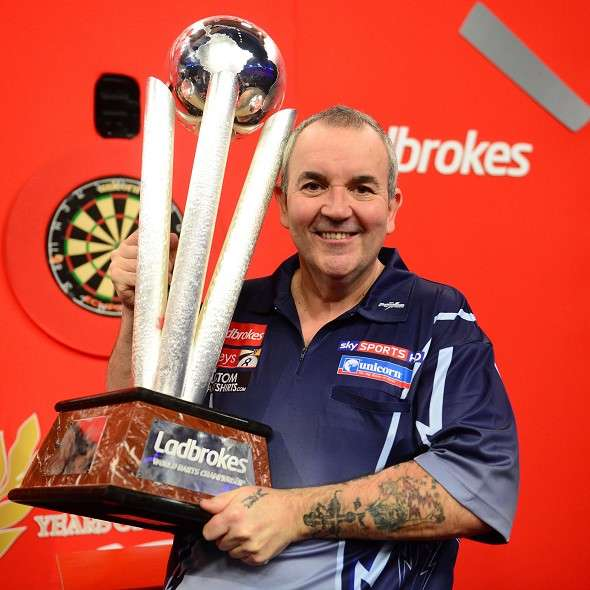
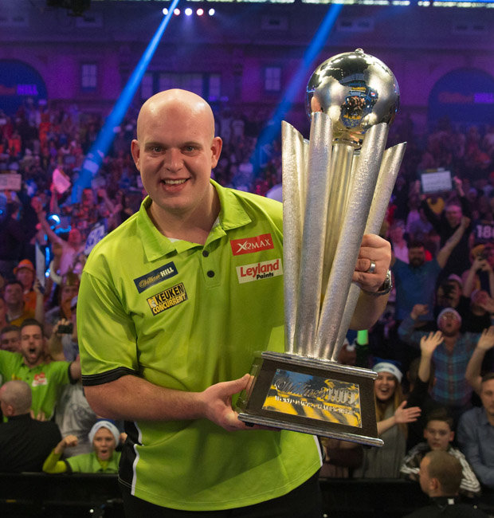
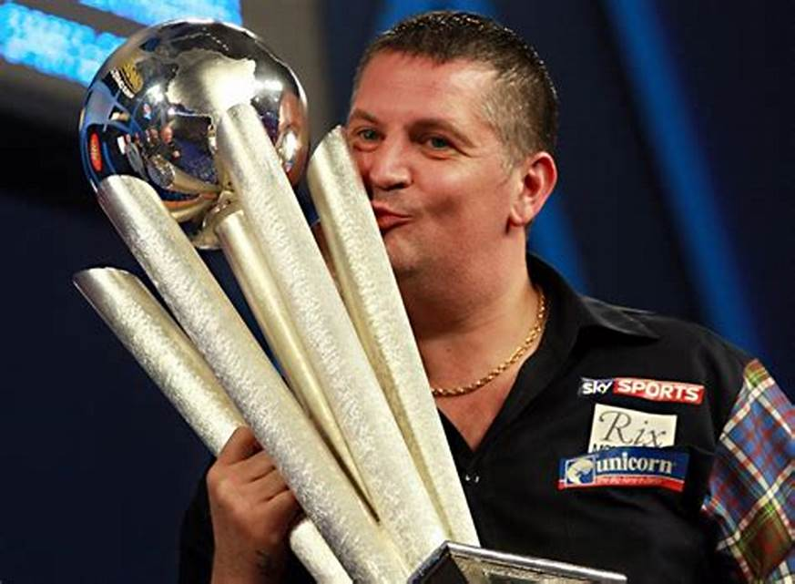
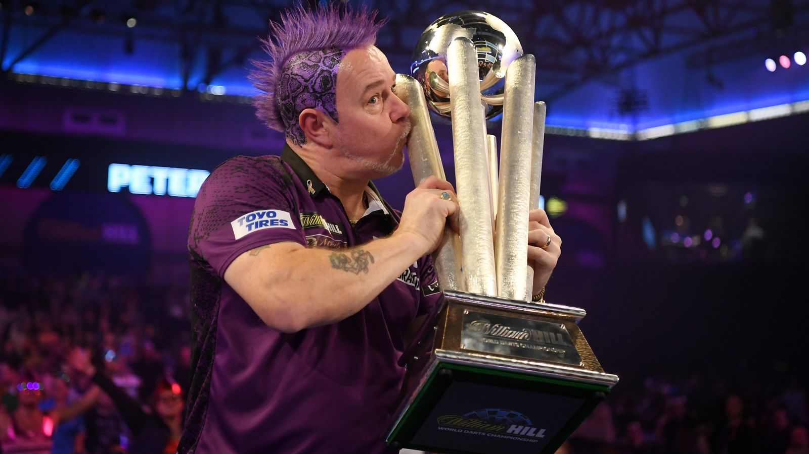
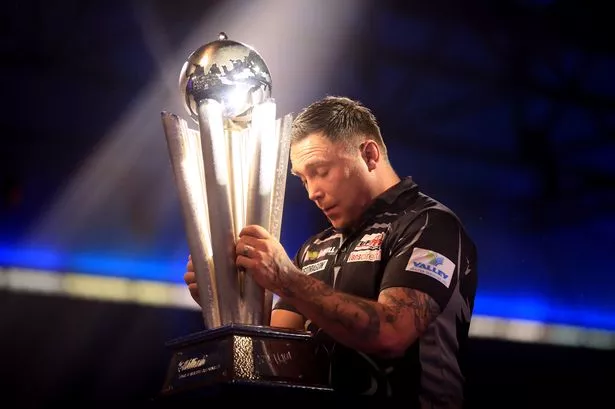
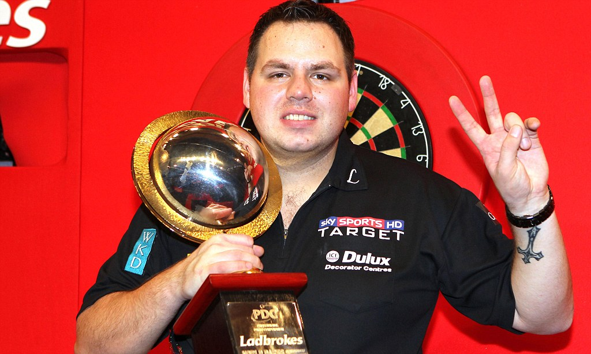
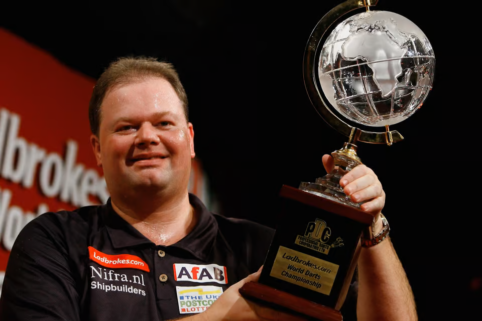
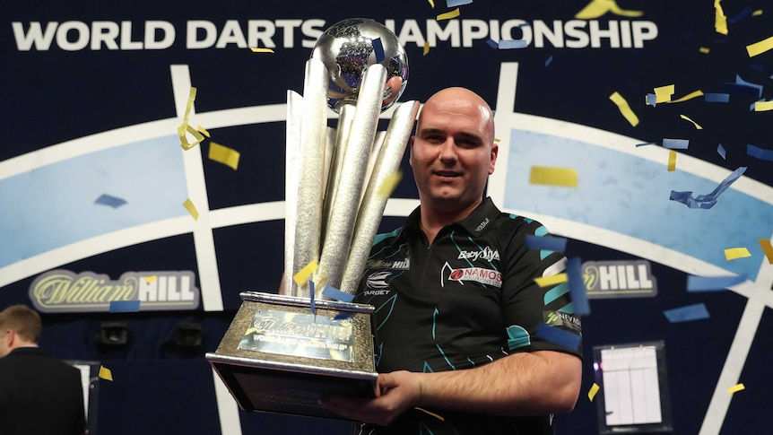
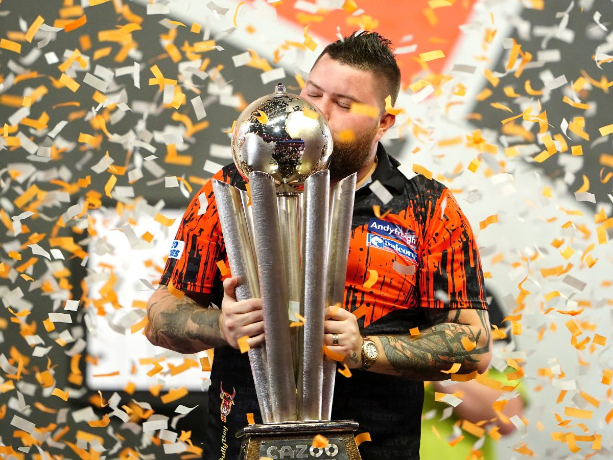
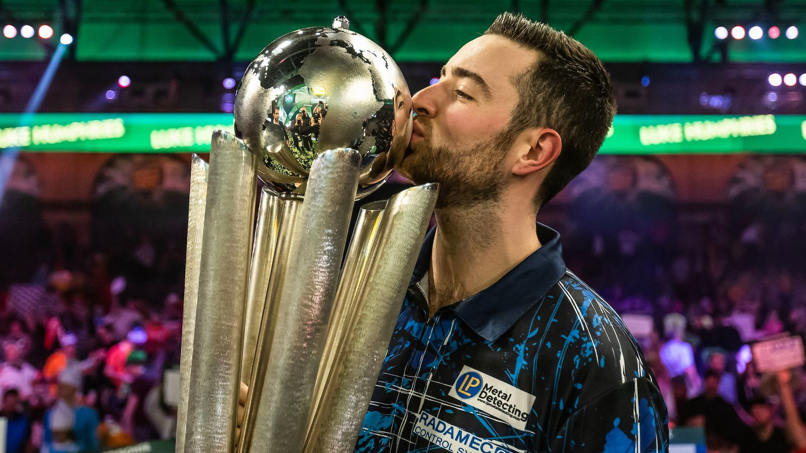
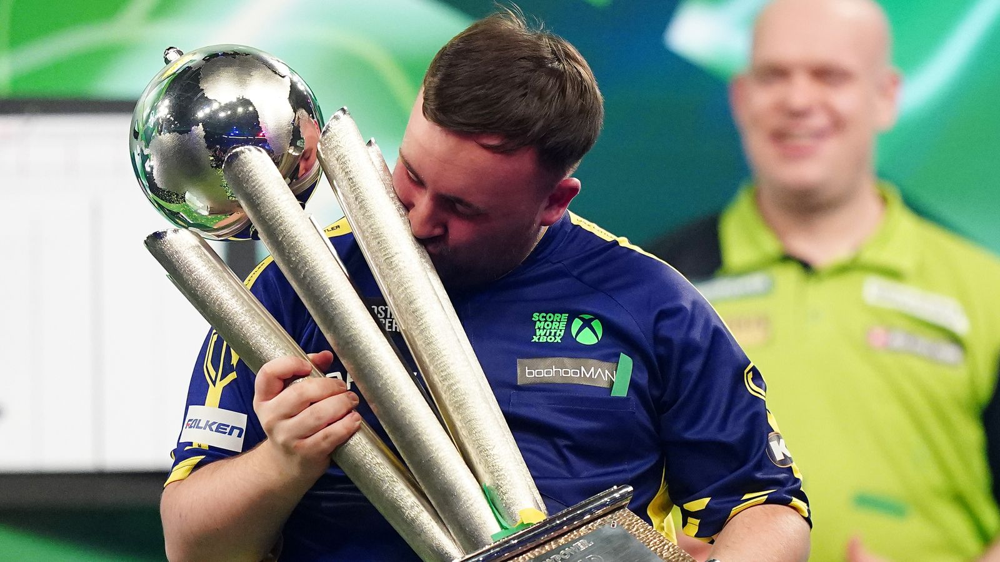